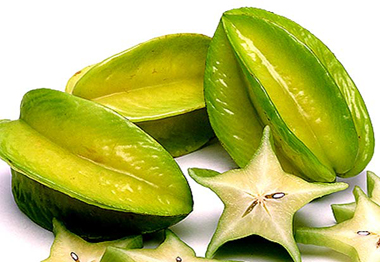

কামরাঙ্গার পরিচিতি
কামরাঙ্গা বাংলাদেশের প্রত্যেকটা জেলায় প্রচুর পরিমানে পাওয়া যায়। টক ও মিষ্টি
স্বাদযুক্ত দু’ধরনের কামরাঙ্গা সাধারণত পাওয়া যায়। পুরো ফলটাই খাওয়া যায়, পাতলা
ত্বকসহ। ফল কচকচে ও রসালো। ফলে আঁশ নেই এবং এর প্রকৃতি অনেকটা আঙুরের মত। কামরাঙ্গা
পাকার পর পরই খেতে সবচেয়ে ভাল; যখন হলদেটে রঙ ধারণ করে। এর বাদামী কিনারাগুলো কিছুটা
শক্ত এবং কষ ভাব যুক্ত। ফল পাকার ঠিক আগেই পাড়া হয় এবং ঘরে রাখলে হলুদ রঙ ধরে। যদিও
এতে মিষ্টতা বাড়েনা। বেশি পেকে গেলে এর স্বাদ নষ্ট হয়ে যায়।

পাকা কামরাঙ্গা অনেক সময় রান্না করেও খাওয়া হয়। দক্ষিণ এশিয়াতে আপেল ও চিনি দিয়ে
রান্না করার চল আছে। চীনে মাছ দিয়ে রান্না করা হয়। অস্ট্রেলিয়াতে সবজি হিসেবে রান্না
করা হয়, আচার বানানো হয়। জ্যামাইকাতে কামরাঙ্গা শুকিয়ে খাওয়ার চল রয়েছে। হাওয়াই ও
ভারতে কামরাঙ্গার রস দিয়ে শরবত বানানো হয়।কামরাঙ্গা দিয়ে জেলি, জ্যাম, মোরববা,
চাটনি, আচার ইত্যাদি তৈরি করা যায়।
কামরাঙ্গার পুষ্টি উপাদান
কামরাঙ্গা দেশের অবহেলিত ফল হলেও এর রয়েছে যথেষ্ট পুষ্টি ও ভেষজ গুণ। এতে ভিটামিন
‘সি'-এর পরিমাণ পেয়ারা, বাতাবি লেবু, কাগজি লেবু, আমড়া ও আমলকি ছাড়া অন্যসব ফলের
চেয়ে কামরাঙ্গায় বেশি থাকে। আয়রনের পরিমাণ পাকা কাঁঠাল, পাকা পেঁপে, পাকা কলা, লিচু,
কমলালেবু ও ডাবের পানির চেয়ে বেশি থাকে।
একজন পূর্ণ বয়স্ক মানুষ প্রতিদিন ভিটামিন সি-এর চাহিদা পূরণের জন্য বড় সাইজের (১০০
গ্রাম) একটি কামরাঙ্গা খেতে পারেন। তাই ঔষধীগুণ সমৃদ্ধ ফল কামরাঙ্গা যেমন পুরণ করবে
শরীরের পুষ্টি তেমনি প্রতিরোধ করবে নানান রোগ।
কামরাঙ্গার উপকারীতা
এতে থাকে এলজিক এসিড যা খাদ্যনালির (অন্ত্রের) ক্যান্সার প্রতিরোধ করে।
এর পাতা ও কচি ফলের রসে রয়েছে ট্যানিন, যা রক্ত জমাট বাঁধতে সাহায্য করে।
পাকা ফল রক্তক্ষরণ বন্ধ করে।
ফল ও পাতা গরম পানিতে সিদ্ধ করে পান করলে বমি বন্ধ হয়।
কামরাঙ্গা ত্বক মসৃণ করে।
এর পাতা ও ডগার গুঁড়া খেলে জলবসন্ত ও বক্রকৃমি নিরাময় হয়।
কামরাঙ্গা পুড়িয়ে ভর্তা করে খেলে ঠাণ্ডাজনিত (সর্দিকাশি) সমস্যা সহজেই ভালো হয়ে
যায়।
এর মূল বিষনাশক হিসেবে ব্যবহৃত হয়।
কামরাঙ্গা ভর্তা রুচি ও হজমশক্তি বাড়ায়।
পেটের ব্যথায় কামরাঙ্গা খেলে উপকার পাওয়া যায়।
শুকানো কামরাঙ্গা জ্বরের জন্য খুবই উপকারী।
২ গ্রাম পরিমাণ শুকনো কামরাঙ্গার গুঁড়া পানির সঙ্গে রোজ একবার করে খেলে অর্শ রোগে
উপকার পাওয়া যায়।
কামরাঙ্গা শীতল ও টক। তাই ঘাম, কফ ও বাতনাশক হিসেবে কাজ করে।